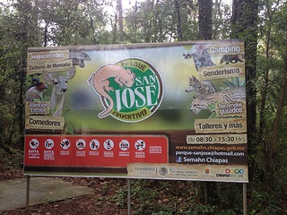
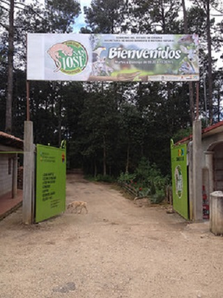
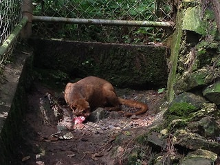
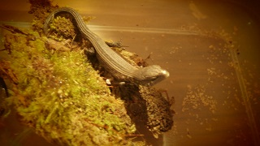
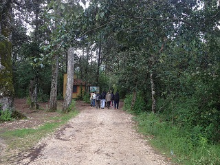

Se fundó en 1995 y está considerado como el segundo en importancia dentro del Estado. Es un bosque que te rodea de una neblina espesa, y así como llega se desvanece. Exhibe flora y fauna propia de la región.
Dentro de los ejemplares de la fauna que encontramos podemos mencionar: Coati o Tejon, Guaqueque, un hermoso Buho llamado "Gran Duque", Cara Cara, un Coyote, ocelote, tigrillo, Zorra gris y Venado cola blanca, de los animales en encierro... Entre los animales en cautiverio encontramos: el Dragoncillo labios rojos, la Nahuyaca de frio, la lagartijera gris y la Barisia; además de árboles y orquídeas de esta región.
Se localizada en el predio San José "El Rosal" Bocomtenelté. Este predio pertenece al municipio de Zinacantán y está a 7 Kms. de distancia de la ciudad de San Cristóbal de Las Casas.
Si usted trae carro y se encuentra ubicado en la avenida crescencio rosas a la altura de la plaza de la paz puede continuar manejando dos cuadras en ese sentido hasta encontrar la calle 1 de marzo para dar vuelta a la izquierda sobre esa calle, avanza una cuadra y nuevamente da vuelta a la izquiera en la calle 5 de mayo para tomar esa calle derecho hasta salir al boulevard juan sabines gtz, de vuelta a la derecha y continue todo derecho hasta llegar al parque san josé bocomtenelté (aproximadamente a 7 km), como referecia pasará el teatro de la ciudad, la clínica de campo, la wolkswagen y la iglesia de san felipe.
En el lugar o Zoológico usted puede practicar actividade como:
* Caminata
* Observación de flora y fauna
* Fotografía
* Zoo
* Observación de flora
* Observación de fauna





posicione el mouse sobre las imágenes